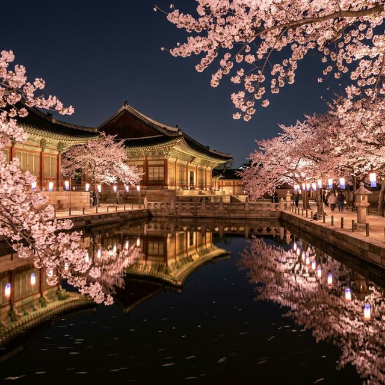
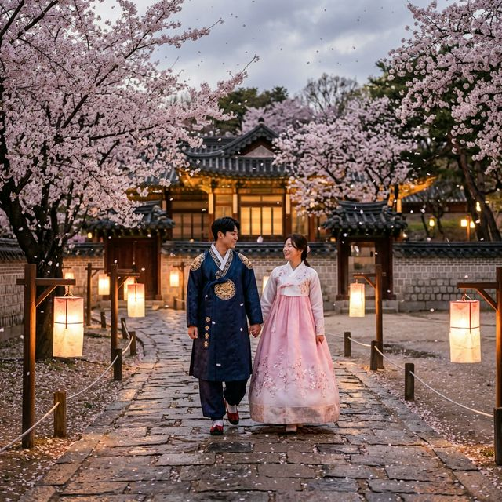
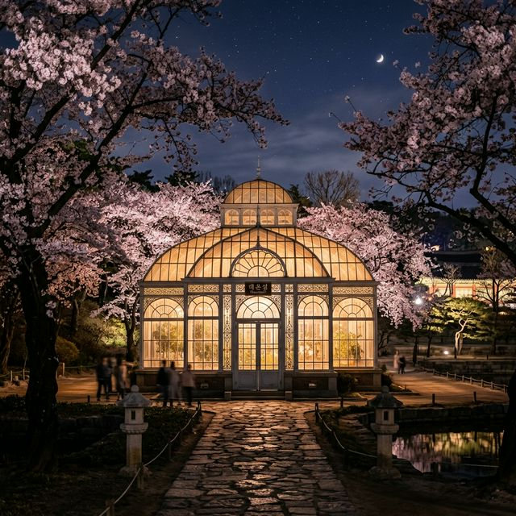

안녕하세요! 오늘은 서울 벚꽃 데이트의 숨은 보석, 창경궁 야간 관람 소식을 들고 왔습니다. 보통 '궁궐 야간 관람'이라고 하면 티켓팅 경쟁부터 떠올리게 되는데요. 창경궁은 작년부터 상시 야간 개방 체제로 운영되어, 매주 월요일 휴궁일을 제외하면 언제든 현장에서 입장권을 끊고 들어가 밤의 정취를 만끽할 수 있습니다.
특히 4월 초, 벚꽃이 흩날리는 시기의 창경궁은 말로 다 표현하기 힘들 만큼 아름답습니다. 화려한 현대식 조명 대신 은은한 청사초롱과 전각의 실루엣이 어우러지는 풍경은 복잡한 도심 속에서 완벽한 힐링을 선사하죠. 지금부터 2026년 창경궁 야간 벚꽃 관람을 위한 팩트 체크와 포토존 정보를 상세히 정리해 드릴게요.

창경궁의 밤 — 은은한 조명 아래 핀 벚꽃이 고풍스러운 전각과 조화를 이루는 풍경
가장 먼저 확인해야 할 것은 관람 시간과 입장 방법입니다. 창경궁은 다른 궁궐과 달리 '특별 관람' 형태가 아닌 '상시 관람' 구간이 야간까지 이어지는 형태입니다. 즉, 낮에 입장하신 분들도 추가 비용이나 퇴장 없이 그대로 밤까지 머무를 수 있다는 것이 가장 큰 장점입니다.
| 항목 | 내용 |
|---|---|
| 운영 시간 | 매일 09:00 ~ 21:00 (입장 마감 20:00) |
| 휴궁일 | 매주 월요일 (월요일이 공휴일인 경우 다음 날 휴궁) |
| 예약 방법 | 사전 예약 불필요 (현장 매표소에서 선착순 입장권 구매) |
| 입장료 | 성인(만 25~64세) 1,000원 | 만 24세 이하 & 만 65세 이상 무료 |
| 무료 혜택 | 한복 착용자 무료 입장 |
입장료가 단돈 1,000원이라는 점도 매력적이지만, 한복을 입으면 무료로 입장할 수 있어 기념사진을 남기려는 연인들과 외국인 관광객들에게 인기가 높습니다. 창경궁 주변에는 한복 대여점도 많으니, 특별한 추억을 만들고 싶다면 한복 데이트를 계획해 보시는 것도 추천합니다.

한복을 입고 거니는 창경궁의 밤 — 타임슬립을 한 듯한 평화로운 분위기를 느낄 수 있습니다.
창경궁 야간 산책의 목적은 역시 '인생샷'이죠. 넓은 궁궐 안에서 벚꽃과 야경을 가장 예쁘게 담을 수 있는 세 곳을 꼽아봤습니다.
창경궁 야경의 하이라이트는 단연 대온실입니다. 1909년에 완공된 서양식 식물원으로, 백색의 철골 구조와 유리로 된 이국적인 외관이 밤이 되면 하얗게 빛납니다. 대온실 주변에는 하얀 자두나무 꽃과 벚꽃이 화려하게 피어 있어, 마치 동화 속 한 장면 같은 분위기를 자아냅니다. 사진 찍는 분들이 가장 길게 줄을 서는 명당이니 일몰 직후 매직아워에 가장 먼저 들러보세요.
대온실 바로 앞에 위치한 대형 연못인 춘당지는 수면에 비치는 전각과 정자의 반영이 압권입니다. 연못 주변으로 심어진 왕벚나무와 수양벚꽃들이 물 위로 가지를 드리우고, 그 꽃잎이 수면 위로 떨어지는 모습은 창경궁에서만 볼 수 있는 절경입니다. 연못을 한 바퀴 도는 산책로 곳곳에 설치된 은은한 조명 덕분에 밤에도 안전하고 낭만적인 산책이 가능합니다.
창경궁의 정전인 명정전 방향으로 걷다 보면 만나는 옥천교 주변도 숨은 명소입니다. 옥천교 아래로 흐르는 개울과 그 주변의 매화, 벚꽃들이 궁궐 건물의 웅장함과 대비되어 기품 있는 사진을 만들어줍니다. 특히 옥천교 위에 서서 명정전의 지붕 곡선을 배경으로 찍는 사진은 가장 '궁궐다운' 느낌을 줍니다.

야간의 대온실 — 백색의 건축물과 주변 봄꽃이 어우러져 이국적이고 신비로운 분위기를 연출합니다.
올해 서울의 벚꽃은 평년보다 조금 이른 3월 말부터 개화를 시작하여, 4월 첫째 주(4/1~4/7)에 절정을 이룰 것으로 전망됩니다. 특히 4월 1일 현재 창경궁의 벚꽃은 약 50~60% 정도 개화한 상태로, 이번 주말이면 흐드러지게 핀 만개 상황을 볼 수 있을 것입니다.
창경궁은 다른 궁에 비해 벚나무가 밀집되어 있지는 않지만, 곳곳에 자리한 수양벚꽃(능수벚꽃)의 형태가 매우 우아합니다. 가지가 바닥을 향해 길게 늘어진 수양벚꽃 아래에서 찍는 사진은 일반 벚꽃과는 또 다른 매력을 줍니다.
즐거운 관람을 위해 몇 가지 지켜야 할 에티켓과 팁이 있습니다.
창경궁 방문 전후로 들르기 좋은 대학로(혜화) 명소들을 엮어 하루 코스를 짜보면 어떨까요?
🌸 창경궁 야간 관람 요약: 예약 없이 밤 9시까지, 입장료 1,000원!
복잡한 예매 절차 없이도 서울 도심에서 완벽한 벚꽃 야경을 즐길 수 있는 창경궁. 이번 4월 초, 연인이나 가족과 함께 청사초롱 불빛 아래를 거닐며 잊지 못할 봄밤의 추억을 만들어보세요. 웅장한
전각과 하얀 대온실, 그리고 흩날리는 벚꽃은 여러분의 카메라 롤을 가득 채우기에 충분할 것입니다.
출처 및 참고: 국가유산청 궁능유적본부 공식 누리집 (royal.khs.go.kr), 대한민국 구석구석 (visitkorea.or.kr)
※ 본 게시물은 2026년 운영 정보와 개화 예보를 바탕으로 작성되었습니다. 기상 상황이나 기관 사정에 따라 세부 일정은 변경될 수 있으니 방문 전 공식 홈페이지 공지사항을 꼭 확인하세요.
👉 함께 읽으면 좋은 글: 경주 대릉원 돌담길 벚꽃 2026 — 4월 3~5일 축제 완벽 가이드
👉 함께 읽으면 좋은 글: 강릉 경포 벚꽃 실시간 현황 — 4월 4~11일 경포벚꽃축제 완벽 가이드
#창경궁야간개장 #창경궁벚꽃 #서울야간데이트 #서울벚꽃명소 #대온실야경 #춘당지야경 #대학로가볼만한곳 #서울야경명소 #창경궁사전예약 #벚꽃축제2026 #한복무료입장 #수양벚꽃 #밤벚꽃데이트 #창경궁관람시간 #서울가볼만한곳